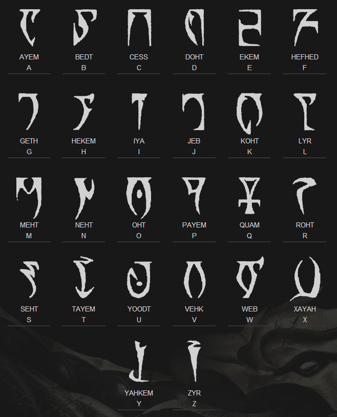

Introduction
The Daedric alphabet is found all around Nirn, mostly in ancient books like The Bible of the Deep Ones and The Tome of Unlife. Also, the Dunmer people of Morrowind seem to use Daedric symbols in some of their writings, often as names of locations written on banners. There is no Daedric language, a common misconception; only Daedric letters substituted for their Tamrielic equivalents. Some may refer to the Daedric alphabet as a font, but most Daedric letters are too dissimilar to be associated with their English equivalents. Neither are they symbols, runes, glyphs, etc.
Alphabet

History and origins
The Daedric alphabet is the written form used by the Daedra and Dunmer of Tamriel. The alphabet is strongly affiliated with magicka. Daedric letters are often referred to as sigils, with various scrolls and tomes, such as the Mysterium Xarxes, written in the Daedric alphabet. The exact source of the alphabet is unknown, it is believed to be the creation of the Daedra themselves, then passed down to the mortal realm. Various symbols have Daedric glyphs, as it is the dialect of change. The PC versions of Morrowind and Oblivion were shipped with a Daedric True Type Font.